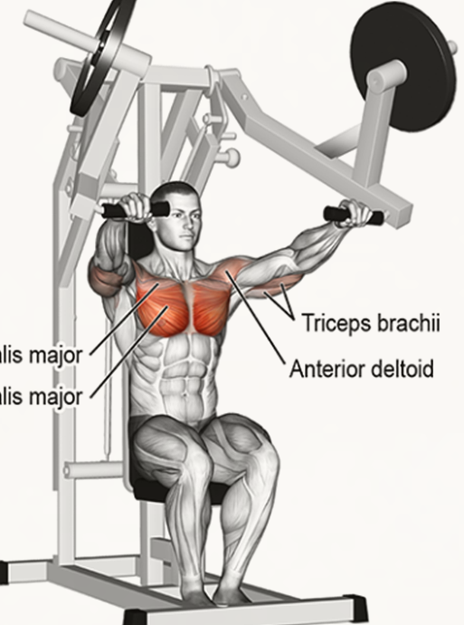

김석한의 Routine Of Workout
Flat Bench Press
Flat Dumbbell Press
Machine Chest Press
Pec Deck Fly Machine
Dips
Push-Up
3. Machine Chest Press
1set
50kg
15reps

2set
60kg
12reps
3set
60kg
12reps
4set
70kg
8reps
※유의사항
이완 2sec, 수축 1sec
이완시 호흡을 들어마시고 수축시 내뱉는다.
견갑을 후인하여 가슴을 고립시킨다.
삼두에 힘이가지 않도록 조심한다.
팔꿈치와 손의 방향이 八자가 되어야 한다.